Heather’s birthday was fast approaching, and while she hadn’t made any grand plans, Neet and Buddy had their own ideas.
“We should throw her a surprise party,” Buddy suggested.
Neet scoffed. “Too basic. We need something spectacular. Something memorable.”
Buddy tilted his head. “Like what?”
Neet grinned mischievously. “A trip to the aquarium.”
Buddy frowned. “Neet, do you even know what an aquarium is?”
Neet nodded confidently. “Of course. It’s like a giant underwater dog park.”
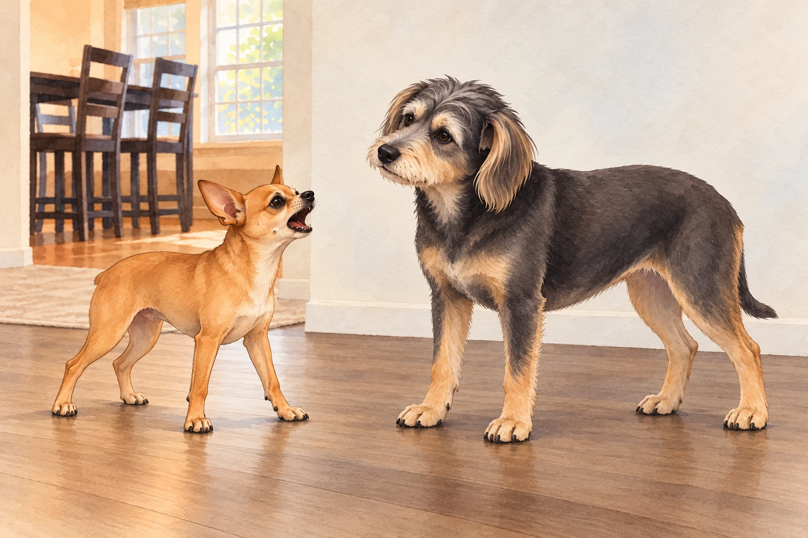
Buddy considered it. Heather liked watching things swim. She could stand watching long after he thought they ought to move on. Usually he nudged her hand to remind her that he was available for attention. For her birthday, perhaps he could let the fish have it.
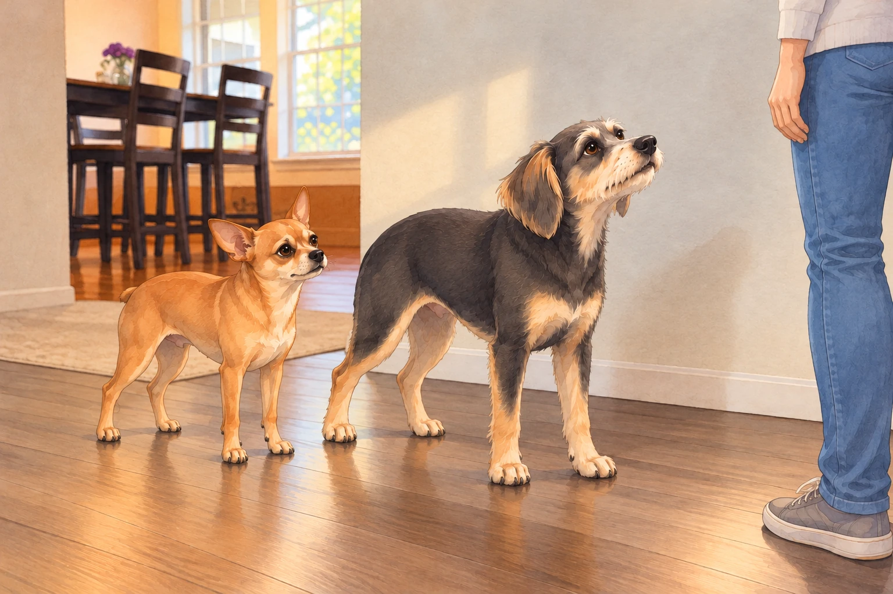
“All right. But it’s her birthday. We let her choose what to look at.”
“Obviously,” said Neet. “She can choose any of the things I find.”
Buddy looked at him. This would require supervision.
The Grand Arrival
The morning of Heather’s birthday, Neet and Buddy woke her up with excessive tail wagging and chaotic barking.
“Surprise! We’re taking you somewhere special!” Neet announced.
Heather blinked sleepily. “Is it a spa day?”
“Better!” Neet chirped. “The aquarium!”
Heather groaned. “This can only end badly.”
She sat up, and Buddy put his chin on the edge of the bed. Neet was still announcing the surprise. Heather rested a hand on each head until the room became quiet enough for her to say, “Happy birthday to me.”
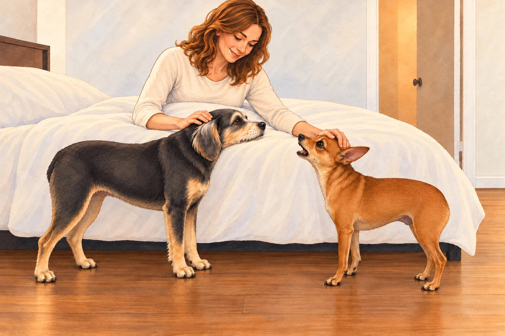
Buddy stayed still. Neet lasted almost three seconds.
Despite her concerns, she loaded the boys into the car and drove to the city’s largest aquarium.
“Excellent,” Neet said as the car stopped. “Our arrangements are working.”
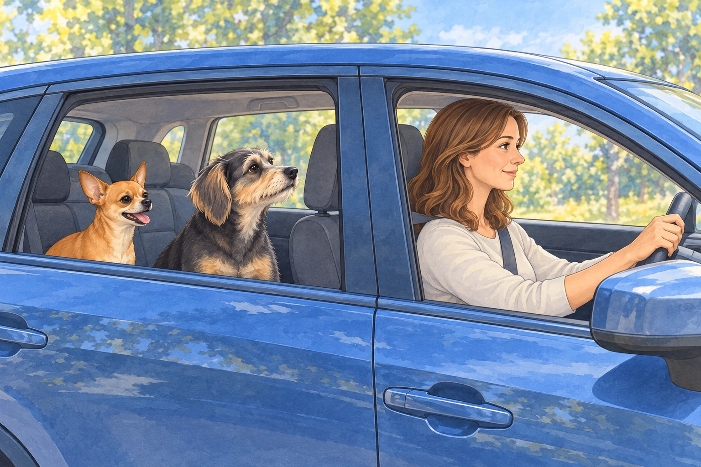
“She drove,” Buddy reminded him.
“We provided the destination.”
The moment they arrived, Neet’s excitement went into overdrive.
“LOOK AT ALL THIS WATER!” he howled. “I WANT TO SWIM WITH THE FISHES!”
Buddy stepped across his path and leaned against his shoulder, turning him back. “That’s not how aquariums work.”
Heather sighed as she collected their tickets. “Guys, please don’t cause a scene.”
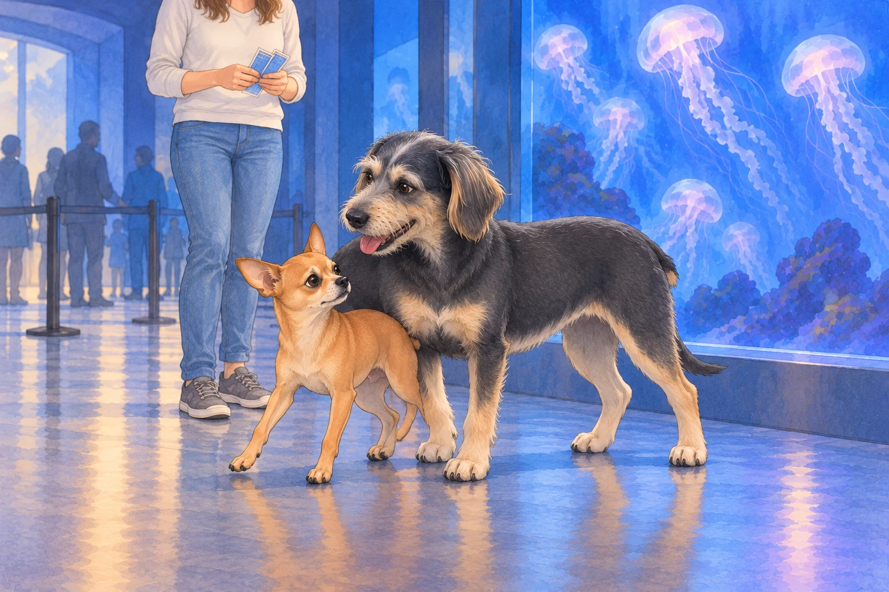
Neet snorted. “Since when have we ever caused a scene?”
Buddy drew breath.
“Not on her birthday,” Neet said quickly.
Meeting the Residents
Their first stop was the jellyfish exhibit. Buddy admired their graceful movements, while Neet was immediately suspicious.
“They’re floating menaces,” he muttered. “I can feel it.”
Heather chuckled. “Neet, they’re harmless behind the glass.”
Neet narrowed his eyes. “That’s what they want you to think.”
Buddy moved closer to the glass. A jellyfish rose. He lifted his chin with it. It sank. His chin sank.
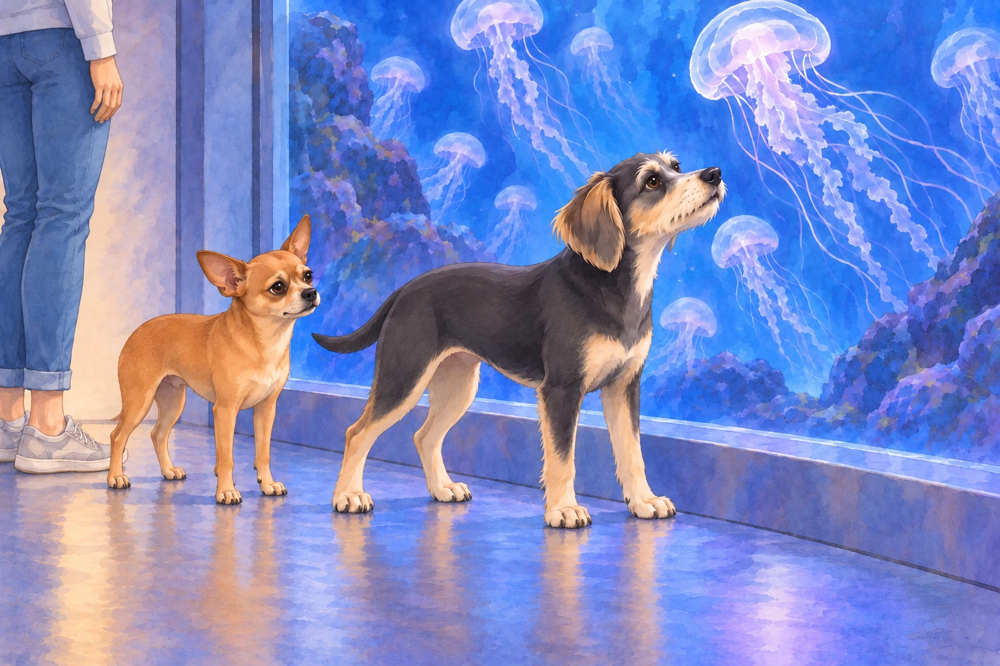
Heather stood beside him for a whole quiet minute.
Neet watched them both. “It’s got you doing it now.”
Buddy kept watching. Heather’s hand rested lightly on his back, without his having to ask. This was going rather well.
Then Neet discovered the way to the shark tunnel.
“Bigger ones!”
Buddy looked up at Heather. She took one last look at the jellyfish and followed. He hurried after her. A minute was a respectable beginning. They had a whole aquarium left.
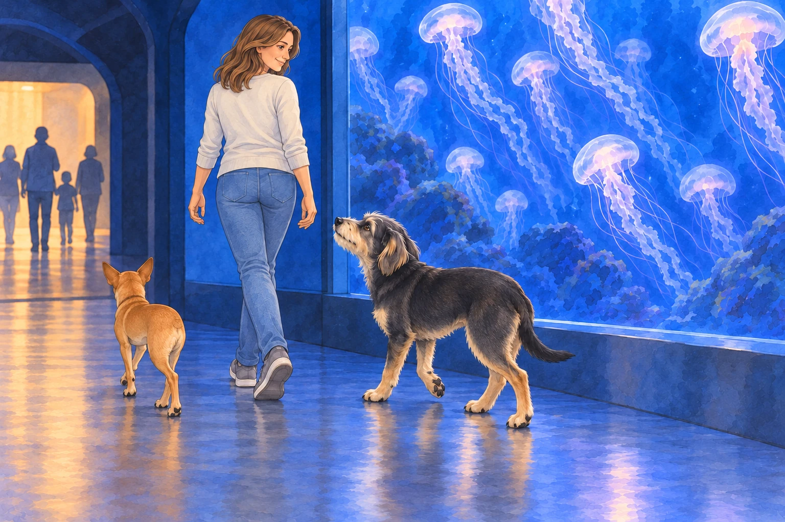
Things only escalated at the shark tunnel.
“HEATHER, IT’S COMING FOR US!” Neet shrieked, hiding behind Buddy.
Buddy stayed where he was so Neet could shelter behind him. “Look. It went over us. There’s glass.”
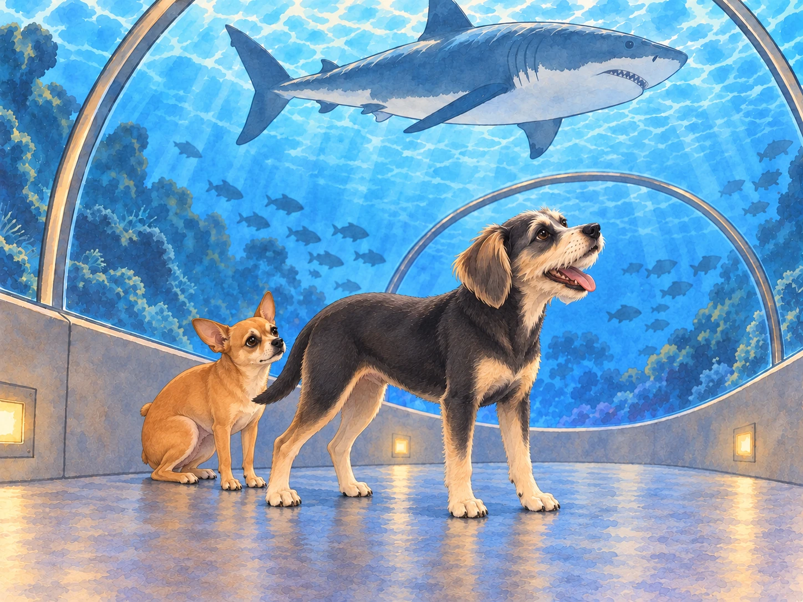
Neet huffed. “You don’t know that. I’ve seen movies. The glass always breaks.”
The shark passed overhead. Buddy made himself keep his head up. It was easier to be sensible at the jellyfish.
Heather crouched beside them and touched Neet’s shoulder. “There it goes.”
Neet peered around Buddy. Another shape glided into view.
“It’s brought support.”
Heather sighed. “Maybe we should move on.”
Buddy took one step. Neet took the same step behind him. They made their way out as a very slow, badly arranged dog.
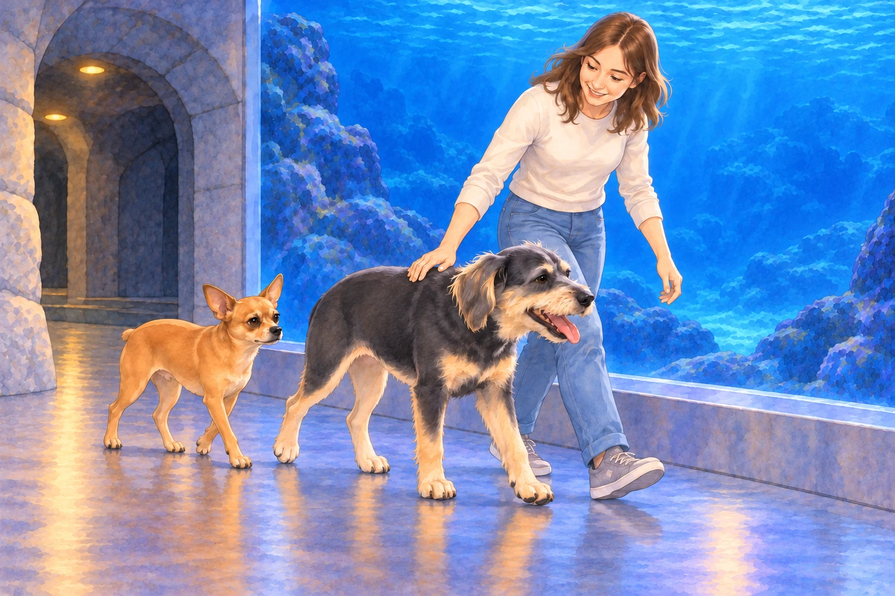
Once they were clear, Neet moved to the front again.
“I’ll check the next area.”
“From behind me?”
“Different conditions now.”
Then they reached the penguin enclosure, where Neet pressed his face against the glass, mesmerized. “Are these birds broken? Why aren’t they flying?”
Buddy rolled his eyes. “They swim instead.”
Neet gasped. “Aquatic birds? This changes everything. I need one.”
Heather pulled him away. “We are not adopting a penguin.”
Neet looked back. The penguin turned and waddled off without him.
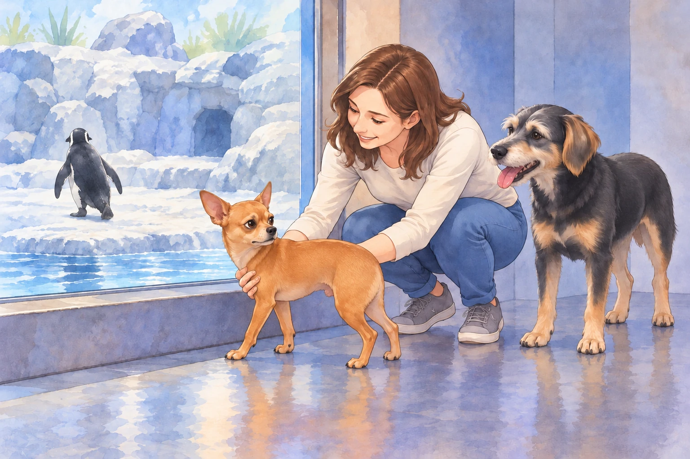
“That was mutual,” Buddy said.
Another penguin slipped into the water. Heather laughed at the sudden change from waddle to glide. Buddy sat beside her and waited, pleased to have found something she wanted to see.
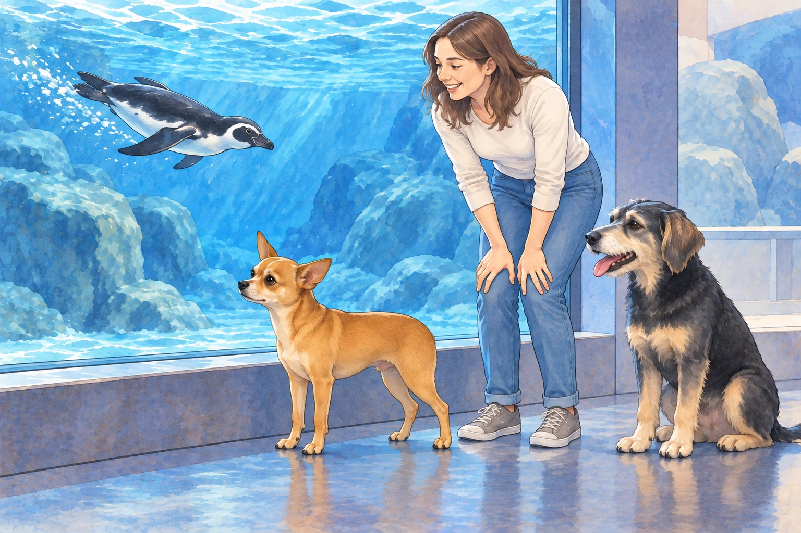
Neet stared after the swimmer. Every promising acquaintance was on the wrong side of a window. Then Heather noticed the touch tank.
At last, thought Neet. An exhibit with proper introductions.
The Touch Tank Fiasco
Heather leaned over to gently pet a stingray.
Buddy sat close by. He could see her waiting for it to come around, hand poised above the water. He waited too.
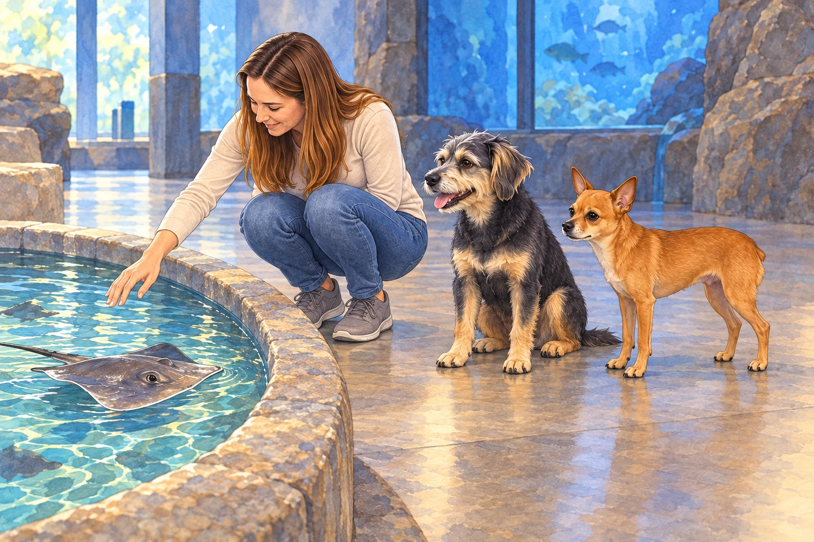
Neet, however, took this as an invitation for chaos.
“I MUST TOUCH THE SEA CREATURES!” he howled, lunging forward.
Before Buddy could stop him, Neet had scrambled onto the low edge of the tank, stretching his little paws toward an unsuspecting horseshoe crab.
The crab was farther away than he had expected. Neet leaned farther.
The staff rushed over. “Ma’am, please keep your dog away from the—”
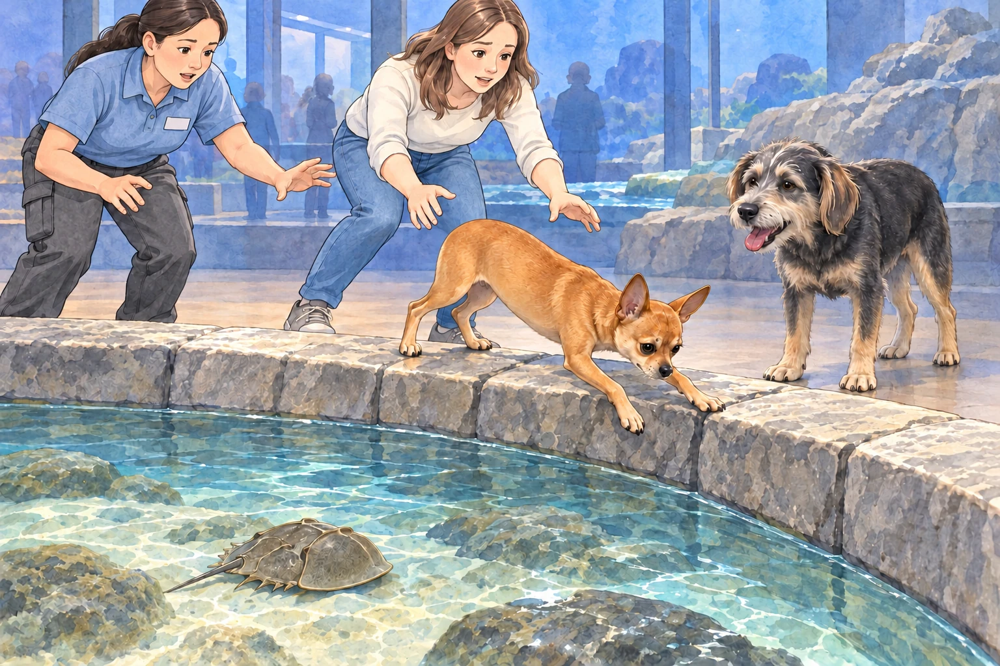
SPLASH!
Neet, true to form, fell in.
Chaos erupted. The stingrays scattered. Heather gasped. Buddy facepawed.
“I’M IN THE OCEAN NOW!” Neet yelped, paddling in place. “I HAVE JOINED THE SEA CREATURES!”
A nearby toddler clapped excitedly. “Look, Mommy! A dogfish!”
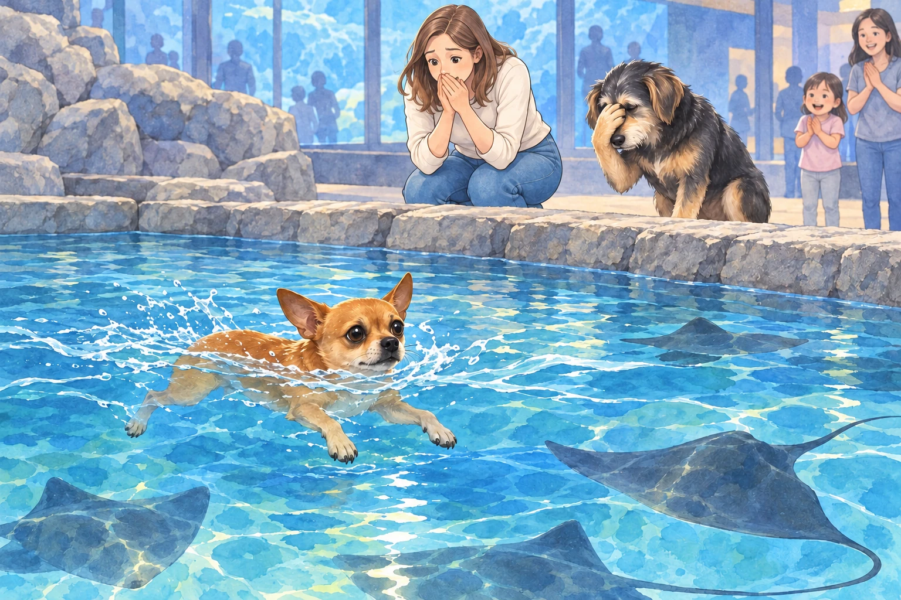
The staff managed to fish him out, wrapping him in a towel while Heather apologized profusely.
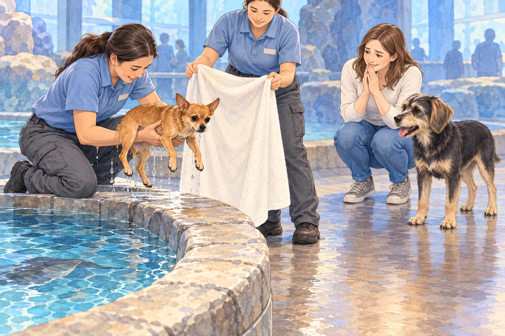
She crouched to check him, holding the towel around his wet body. Neet looked down at the small puddle beneath him. It was a disappointing amount of ocean to have brought back.
Buddy stayed beside Heather. She had barely seen the tank. Once the staff had checked Neet and the water had settled, he nudged her free hand toward it, then planted himself between Neet and the edge.
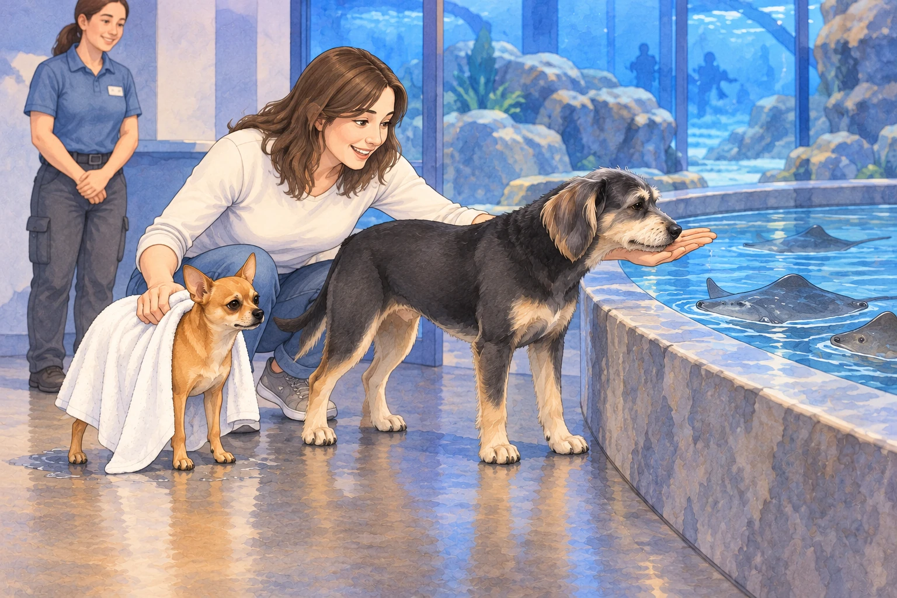
Heather looked from Buddy to the tank. A staff member nodded. She gave the passing stingray one last gentle touch.
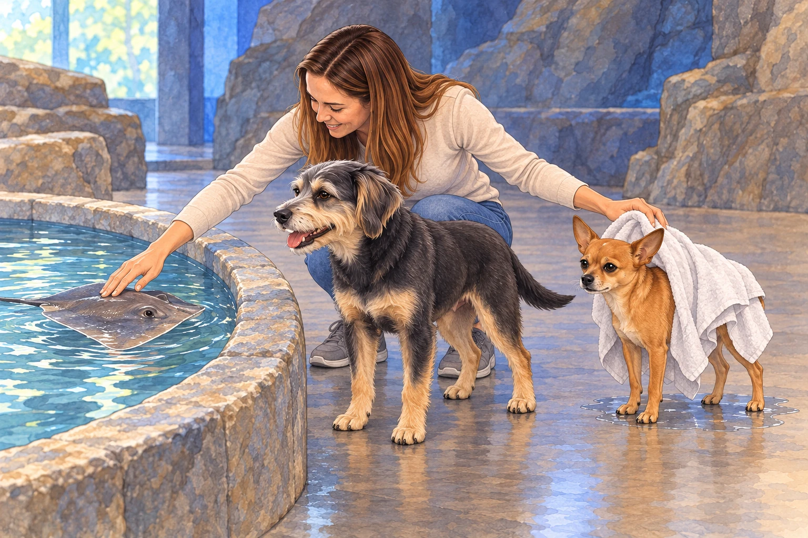
“Birthday girl gets a turn,” Buddy told the towel.
Neet shivered dramatically. “I was one with the water.”
“The water recovered quickly.”
Heather rubbed his back through the towel, then rubbed her temples. “We need to leave before we get banned.”
The Otter Incident
Buddy got up at once. He had rescued one birthday moment. Now he would escort them out with dignity.
Then, a few steps along the way, an otter slid off a rock.
While Neet was drying off, Buddy wandered over to the otter exhibit and was instantly captivated by their playful antics.
“They look like water weasels!” Buddy barked in excitement.
The otter swam past. Buddy rushed to the other end of the window to meet it. It doubled back. Buddy doubled back.
“Who’s taking whom somewhere special?” Heather asked.
Buddy stopped, one paw still raised. “I’m showing you the whole exhibit.”
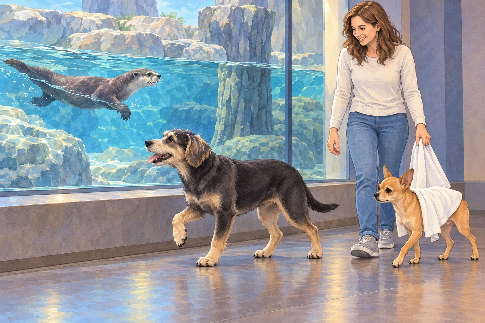
The otter vanished behind a rock. Buddy waited at the window, nose almost touching it. Surely it would come out on this side.
It came out behind him.
Buddy spun around. Heather laughed. He had wanted her to have a good time, and here was an animal determined to make him provide it.
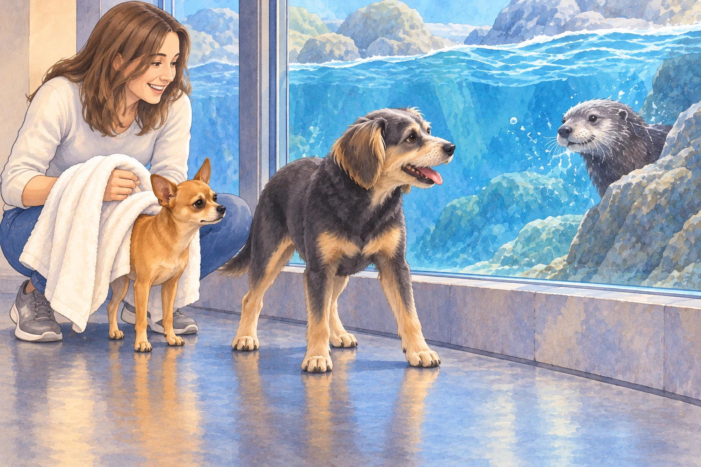
Heather lifted the towel from Neet’s back and gave him another rub. He wriggled free to inspect what Buddy had found.
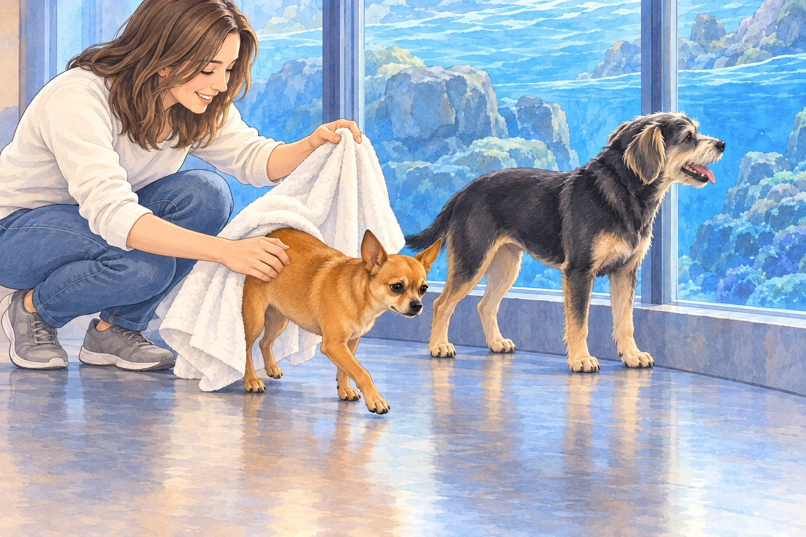
Neet peered over. “They remind me of me. Small, mischievous, and always up to something.”
As if on cue, an otter locked eyes with Neet, grabbed a fish from its trainer, and threw it straight at the glass where Neet stood.
Buddy wheezed. “You’ve been challenged.”
The fish slid slowly down the far side of the glass. Neet followed it with his eyes without moving his head.
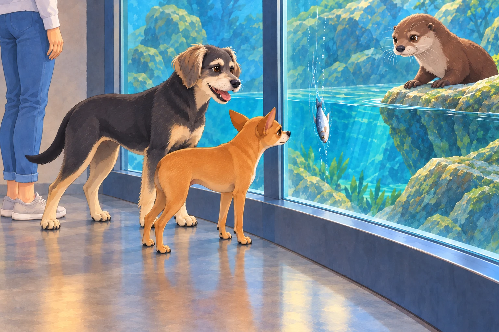
Neet’s eyes narrowed. “This means war.”
Buddy was still enjoying the fish’s descent when Neet turned away. By the time Buddy looked around, Neet was on a chair in the nearby cafeteria, pulling a bread roll off an unattended plate.
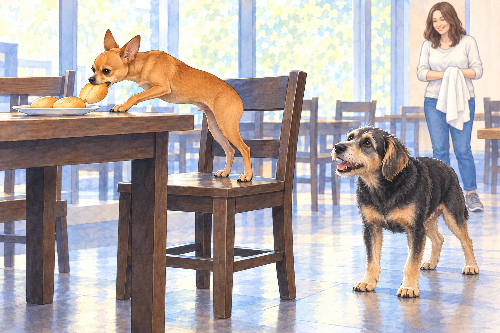
Neet lifted his head. The roll was firmly between his teeth. The otter had made a tactical error in revealing its preferred weapon. He hopped down.
Buddy’s amusement stopped. Heather was folding the towel, and Neet was heading back toward the window.
Buddy stepped into his way. Neet tried to go around him. Buddy moved across again, then looked back at Heather.
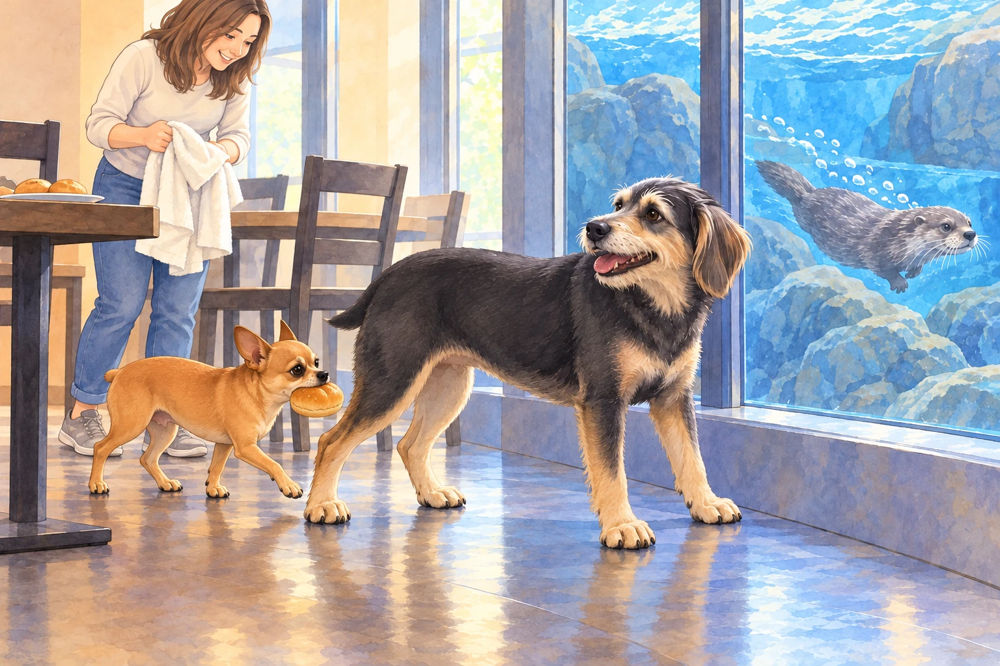
She saw the roll. “Oh, absolutely not.”
Heather took it from him and hurried both dogs away before Neet could return fire.
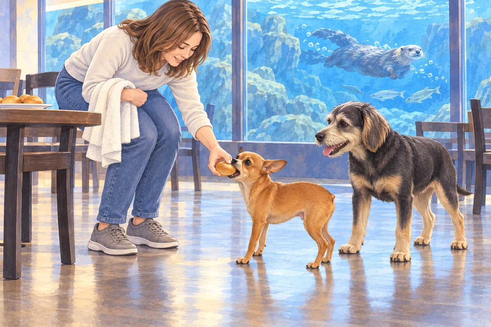
“He started it,” Neet complained through an empty mouth.
Buddy glanced back at the otters. He would have liked another turn at the window. He kept walking.
At the junction, Heather stopped. Buddy looked toward the exit, then toward the jellyfish exhibit.
He remembered her last look before they had followed Neet to the sharks.
Buddy went a little way toward the jellyfish, stopped, and looked back at her. He could wait if she wanted to leave.
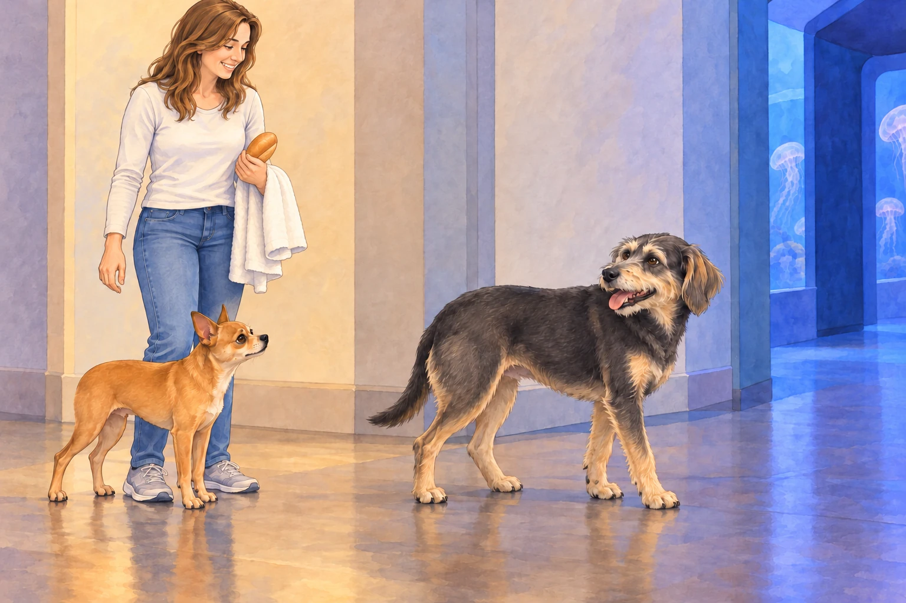
Heather smiled. “One more quiet look?”
Neet opened his mouth. Buddy looked at him.
“I can supervise quietly,” Neet said.
Back at the glass, Heather watched the jellyfish rise and fall. Buddy sat beside her. This time he didn't hurry her, and when her hand settled on his back, he stayed still.
Neet stood on her other side. A jellyfish rose. His chin rose a little before he caught it.
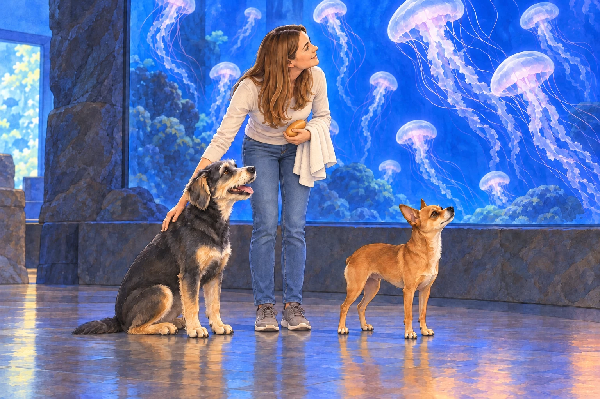
Buddy said nothing.
The Birthday Dinner Surprise
After drying off, they decided to end the day with dinner at a seafood restaurant.
Neet, now fully dry and still unapologetic, sat at the table with a smug grin.
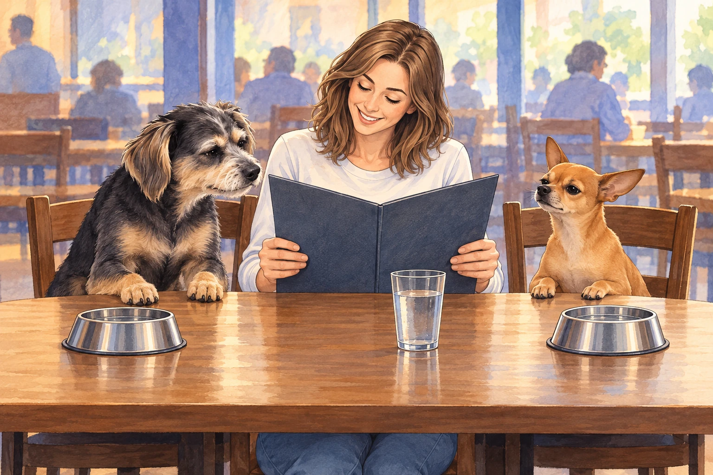
Heather looked at her menu. “What are you guys getting?”
Buddy sighed. “Anything not from the aquarium.”
Neet gasped. “You mean some of those fish were from the aquarium?!”
Heather rolled her eyes. “No, Neet.”
Neet exhaled in relief. “Good. Because I made connections in there.”
Buddy groaned. “You made a mess.”
Heather laughed. “Well, this was definitely a memorable birthday.”
Neet wagged his tail. “Only the best for you, Heather!”
Buddy looked at her. “Was the jellyfish bit good?”
“Very good.” Heather reached across to scratch his head. “I liked having my boys with me.”
Neet leaned into reach too. Heather scratched him with her other hand.
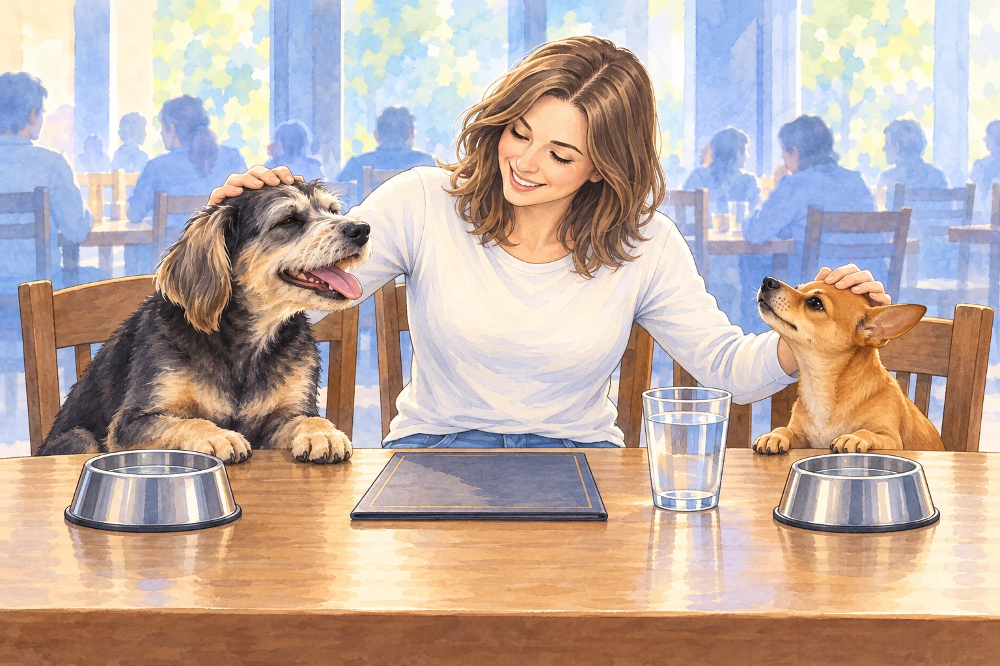
“Even the dogfish?” Neet asked.
“Especially the dry one.”
Heather lifted her glass; the dogs nudged their water bowls toward her. Buddy watched her laugh, then returned to his menu.
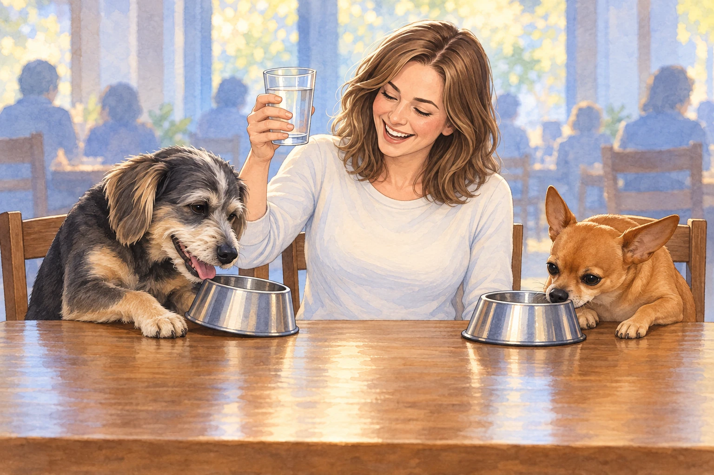
“Next year,” he said, “I’m throwing the surprise party.”
Neet leaned closer. “With a pool?”
Buddy folded the menu over his nose. Heather laughed again.
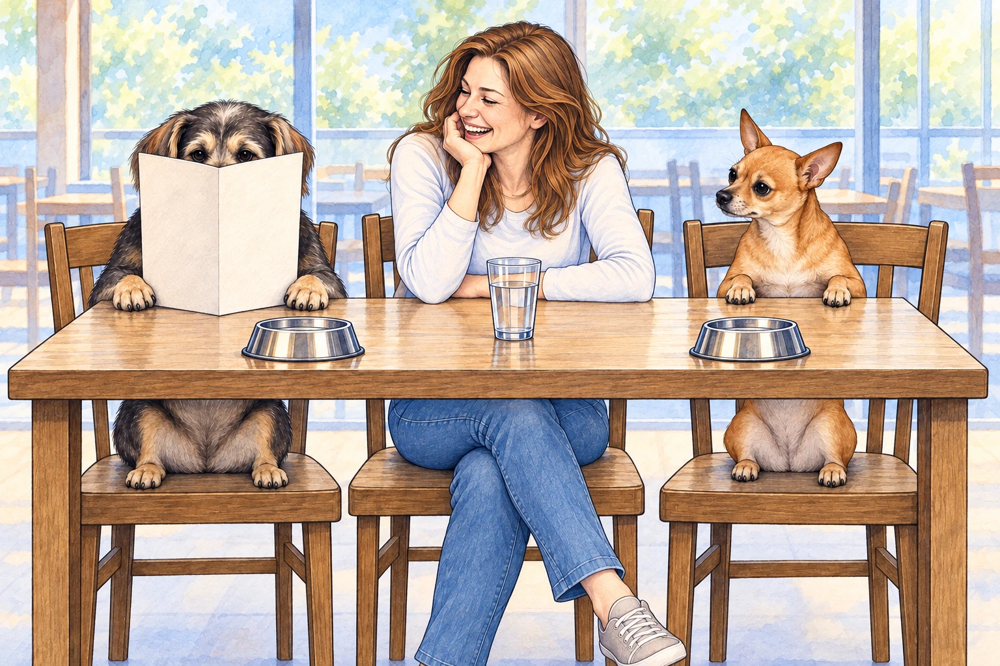